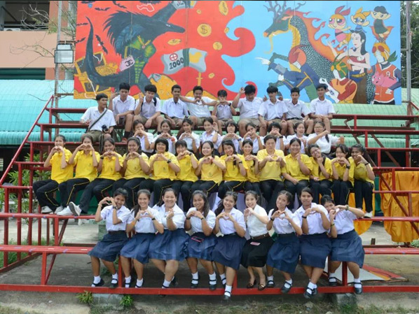
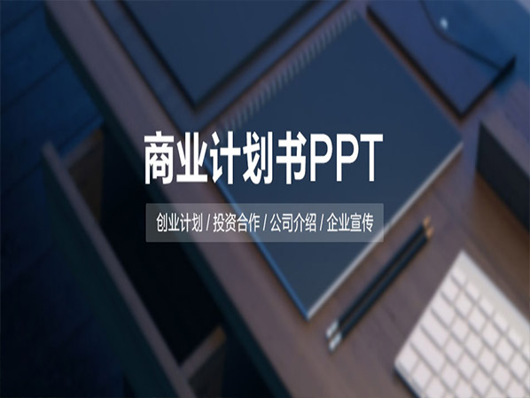

-
伪·社交爱好者
- 互联网重度依赖者，玩转微博，搭建博客，运营微信号、头条号、企鹅号、网易号等各种会出现的号，只为熟悉后台和模式。
- 我更愿做个内容创造者。
- More
-
信息视觉化 @央广新传媒
- 在北京 央广新传媒 搬砖谋生，算 是从事着策划、设计、编辑的工作。
- View
-
伪·汉语教师志愿者 @Thailand
- 参加 国家汉语办公室国际汉语教师志愿者 项目，赴泰国担任汉语教师志愿者。
- 怀念泰国曼谷周边的那个小镇，也希望你们汉语好一点。
- Nong Chok
-
伪·摄影爱好
- 伪·摄影爱好者，机器一般，拍摄技能还配不上受众的D7000；看不了世界，所以只能拍拍花花草草。Lofter madao's
photo 空间相册 威海弹指间 时间和空间的轮回
- Ps Nikon View
- 伪·摄影爱好者，机器一般，拍摄技能还配不上受众的D7000；看不了世界，所以只能拍拍花花草草。Lofter madao's
photo 空间相册 威海弹指间 时间和空间的轮回
-
Intern @21jingji
- 在21世纪经济报道北京站 实习半年，认识众多良师益友，收获无穷，怀念在报纸的日子。希望不断受到打击的21一直走下去。
- 21世纪经济报道 还是国内最靠谱的财经媒体之一。
- @21jingji
-
PPT演示制作
- 在学校唯一参加过的技能证书“微软办公软件认证”便是，通过了PPT和Excel的认证。Excel因为不常使用目前忘得差不多，PPT制作技术倒是一直保持着，可以对软件熟练使用，看多了模板，也尝试做了模板在网络出售。
- PPT制作要好好学啊
- @演界网
-
Home - My Shcool
- 山东大学（威海），它很好，但不够好。虽然被戏称为“威海大学”，虽然是一个小城的学校，虽然是和外面的交流也不多，但还是谢谢它。
- 每年的毕业季，后山上的槐花香让人想念。
- View
{% if site.duoshuo_username %}
-
{% endif %}
MaTeng
一个新闻专业的学生，
永远是个学生，希望不断进化自己的人。